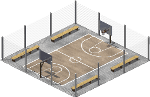
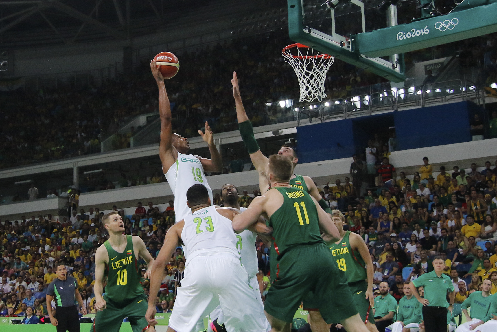

Зимой 1891 года студентам колледжа Молодёжной христианской ассоциации из Спрингфилда, штат Массачусетс, вынужденным выполнять
гимнастические упражнения, считавшиеся в то время единственным средством приобщения молодёжи к спорту, было очень скучно
на занятиях физического воспитания. Однообразию таких занятий необходимо было положить конец.
Выход из этого положения нашёл преподаватель колледжа Джеймс Нейсмит. 21 декабря 1891 года он привязал две корзины
из-под персиков к перилам балкона спортивного зала и, разделив восемнадцать студентов на две команды, предложил им игру,
смысл которой сводился к тому, чтобы забросить большее количество мячей в корзину соперников.
Идея этой игры у него зародилась ещё в школьные годы, когда дети играли в старинную игру «duck-on-a-rock» («Утка на скале»).
Смысл этой популярной в то время игры заключался в следующем: подбрасывая небольшой камень, необходимо было поразить им вершину
другого камня, большего по размеру.
Игра, получившая название «баскетбол», лишь отдалённо напоминала современный вид спорта. Ведения мяча не существовало,
игроки только перебрасывали его друг другу, стоя на месте, и стремились затем закинуть в корзину, причём исключительно
обеими руками снизу или от груди, а после удачного броска один из игроков забирался на приставленную к стене лестницу и
извлекал мяч из корзины. Целью доктора Нейсмита было создать игру именно коллективную, в которую можно было бы вовлечь
одновременно большое количество участвующих, и этой задаче его изобретение отвечало в полной мере.
В 1892 году преподавателем физкультуры Смит-колледжа в Нортгемптоне (Массачусетс) Сендой Беренсон были разработаны первые
правила женского баскетбола.
Развитие

Первые этапы развития баскетбола связаны с его распространением в учебных заведениях США — школах и колледжах.
Ещё до начала XX века, игра довольно быстро приобрела определённую популярность не только в Соединённых Штатах, но и в Канаде.
Родоначальник баскетбола, колледж Молодёжной христианской ассоциации, поначалу активно занимался регулированием и распространением
игры, однако десятилетие спустя руководство пришло к выводу, что эта деятельность препятствует реализации основной миссии учебного
заведения, и приняло решение дистанцироваться от нового вида спорта. В 1898 году была предпринята первая попытка создать
профессиональное объединение — Национальную баскетбольную лигу, — однако она просуществовала лишь пять лет. После Первой мировой
войны ответственность за правила и руководство взяли на себя две любительские организации: Национальная ассоциация студенческого
спорта и Любительский спортивный союз. Активную роль в популяризации баскетбола играл в то время и его непосредственный создатель,
Дж. Нейсмит.
В России в баскетбол начали играть в 1906 году в петербургском обществе «Маяк», также известным под названием «Комитет содействия
нравственному и умственному развитию молодых людей». В 1909 в нём состоялся первый турнир с участием 6 команд. В 1913 году
опубликованы правила игры. С 1923 проходят чемпионаты СССР по игре в баскетбол, где первым чемпионом стало московское «Динамо»
(мужское) и «Динамо» (женское).
Профессиональный баскетбол
В начале XX века начали оформляться первые профессиональные баскетбольные команды. C одной стороны, на всей территории
Соединённых Штатов в населенных пунктах разнообразного масштаба возникло существенное количество таких команд (количеством
в несколько сотен); с другой стороны, какая-либо организация профессиональных игр практически отсутствовала. Игроки произвольно
перемещались между составами команд, матчи устраивались в помещениях, не приспособленных для проведения соревнований, появлялись
и расформировывались разнообразные лиги и объединения. Некоторые «гастрольные» команды (англ. barnstorming squads), такие, как,
к примеру, Original Celtics, New York Renaissance Five или Harlem Globetrotters (последняя существует и по сей день) в своих
поездках по стране успевали сыграть до 200 матчей в год.
В 1946 году возникла Баскетбольная ассоциация Америки (БAA). Первый матч под её эгидой состоялся 1 ноября того же года в Торонто
(Канада) между командами Toronto Huskies и New York Knickerbockers. По прошествии трёх игровых сезонов, в 1949 году, ассоциация
объединилась с Национальной баскетбольной лигой США, в результате чего была образована Национальная баскетбольная ассоциация (НБА).
К середине века баскетбол получил широкое распространение в образовательных учреждениях, став там одним из ключевых видов спорта, и
в результате этого пропорционально возрос интерес и к профессиональному баскетболу. В 1959 году в Спрингфилде, где состоялся первый
в истории баскетбольный матч, был основан Зал славы, в котором увековечиваются имена наиболее значимых игроков, тренеров, судей и
других людей, внесших существенный вклад в развитие игры. Примерно десятилетие спустя, в 1967 году, была создана ещё одна
организация — Американская баскетбольная ассоциация, которая в течение некоторого времени составляла конкуренцию NBA; впрочем,
она также недолго хранила самостоятельность и уже через 9 лет слилась с НБА. Последняя в настоящее время является одной из наиболее
влиятельных и известных профессиональных лиг в мире. В сезоне 2021/22 в НБА выступает 30 команд. Самыми титулованными командами в
истории НБА являются «Миннеаполис/Лос-Анджелес Лейкерс» (17 побед в 32 финалах) и «Бостон Селтикс» (17 побед в 21 финале). НБА
считается сильнейшей лигой мира, победа в финале НБА часто рассматривается как более престижная, чем победа на Олимпийских играх
или чемпионате мира.
В 2001 году была также образована младшая лига НБА — так называемая Лига развития (ныне — Джи-Лига НБА). В сезоне 2021/22 в лиге
играли 30 команд.
Международный баскетбол
В 1932 году на первой международной конференции национальных баскетбольных ассоциаций, состоявшейся в Женеве (Швейцария), была основана
Международная федерация (любительского) баскетбола. В роли основателей выступили национальные баскетбольные комитеты восьми стран:
Аргентины, Чехословакии, Греции, Италии, Латвии, Португалии, Румынии и Швейцарии. На момент создания предполагалось, что в сфере ведения
организации будет находиться лишь любительский баскетбол; впоследствии, в 1989 году, профессиональные баскетболисты получили допуск к
международным соревнованиям, и слово «любительский» было изъято из наименования. Следует заметить, что в то же время франкоязычная
аббревиатура названия — FIBA — изменениям подвергнута не была.
Самое первое, пилотное, международное состязание датируется ещё 1904 годом; в программе летних Олимпийских игр баскетбол фигурирует с
1936 года. Тогда, в Берлине, чемпионом стала сборная США, которая победила в финале Канаду. С тех пор американская команда традиционно
доминировала на олимпийских баскетбольных соревнованиях вплоть до 1972 года, когда в Мюнхене в ходе финального матча она потерпела первое
поражение от сборной СССР. Что касается чемпионатов мира под эгидой ФИБА, то первое такое состязание состоялось в Аргентине в 1950 году,
а три года спустя в Чили прошёл также и первый чемпионат мира среди женских команд. Женский баскетбол вошёл в олимпийскую программу на
десять Олимпиад позже мужского — в 1976 году, в Монреале (Канада). За чемпионский титул тогда боролись, в частности, сборные команды СССР,
США, Бразилии и Австралии.

Матч между мужскими сборными Литвы и Бразилии на Олимпийских играх 2016 года
ФИБА отказалась от разграничения между любительским и профессиональным баскетболом, как уже было сказано, в 1989 году, и через три года
профессиональные игроки впервые приняли участие в Олимпийских играх. Американская сборная этого года получила неофициальное наименование
«Команда мечты» (англ. Dream Team), укрепив доминирующие позиции США в данном виде спорта; впрочем, со временем, по мере того, как
баскетбол развивался в других странах мира, иные национальные сборные начали постепенно одерживать победы над американской командой. Так,
на чемпионате мира 2002 года в Индианаполисе сборная США, составленная исключительно из игроков NBA, оказалась в итоге шестой, пропустив
вперёд в турнирной таблице югославскую команду, Аргентину, Германию, Новую Зеландию и Испанию. В 2004 году на летних Играх в Афинах
американцы потерпели первое олимпийское поражение в составе с профессиональными игроками, на групповом этапе уступив сборным Пуэрто-Рико
и Литвы и проиграв в полуфинале аргентинской команде (сумев, впрочем, выиграть бронзу в матче с Литвой за третье место). Аналогичная
ситуация сложилась и на чемпионате мира в Японии 2006 года — там сборная США также заняла третью строку турнирной таблицы. Впрочем, затем
американская команда добилась высоких результатов на Олимпиаде-2008 и на чемпионате мира 2010 года в Турции.
Глобализация баскетбола отражалась и в составе команд, и в статистике NBA: так, в соревнованиях ассоциации в настоящее время участвуют
представители всех континентов. В основном пик активности игроков из других стран мира пришелся на середину 90-х годов, когда в NBA пришли
известные спортсмены из стран Европы (преимущественно восточной).
 Идея этой игры у него зародилась ещё в школьные годы, когда дети играли в старинную игру «duck-on-a-rock» («Утка на скале»).
Смысл этой популярной в то время игры заключался в следующем: подбрасывая небольшой камень, необходимо было поразить им вершину
другого камня, большего по размеру.
Идея этой игры у него зародилась ещё в школьные годы, когда дети играли в старинную игру «duck-on-a-rock» («Утка на скале»).
Смысл этой популярной в то время игры заключался в следующем: подбрасывая небольшой камень, необходимо было поразить им вершину
другого камня, большего по размеру.